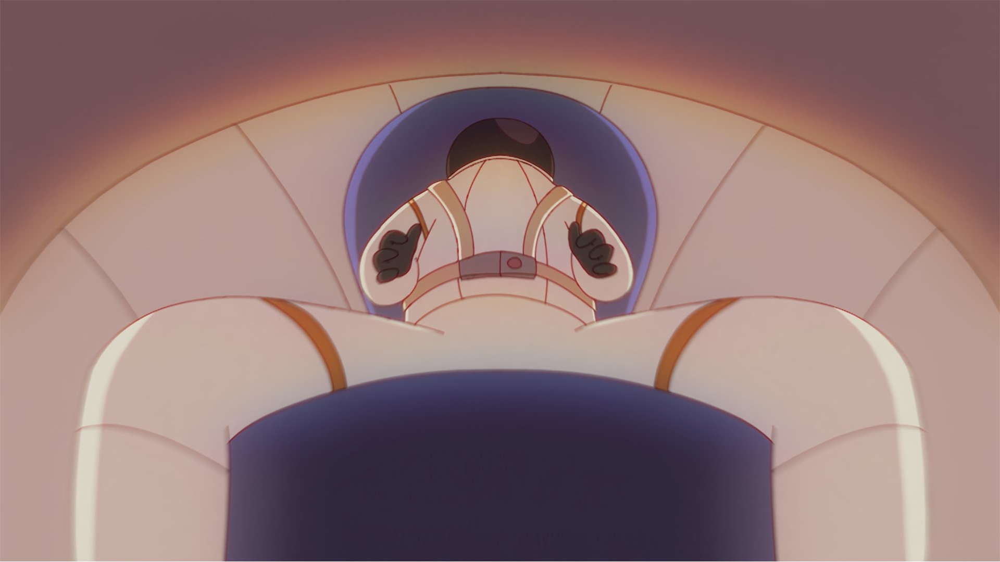
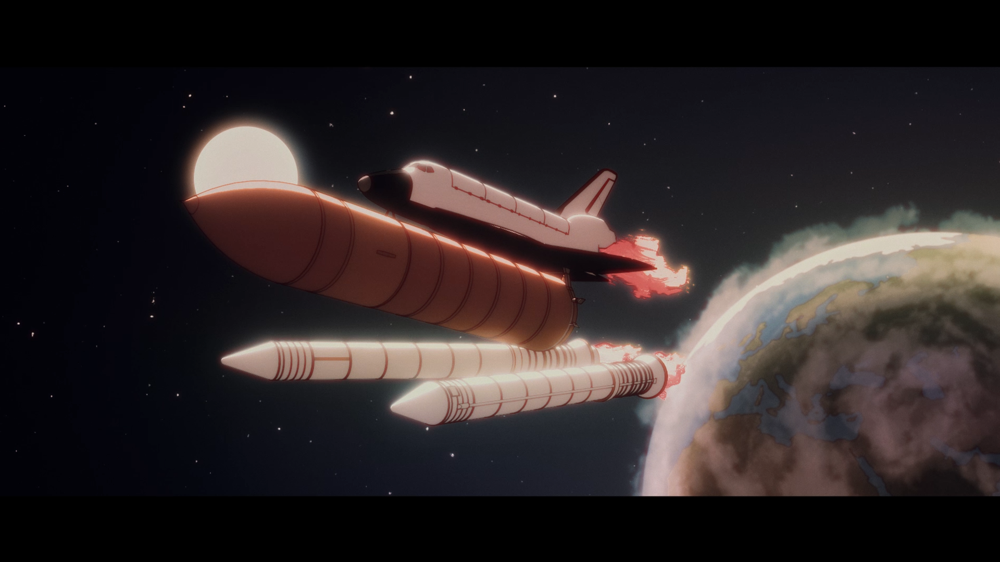
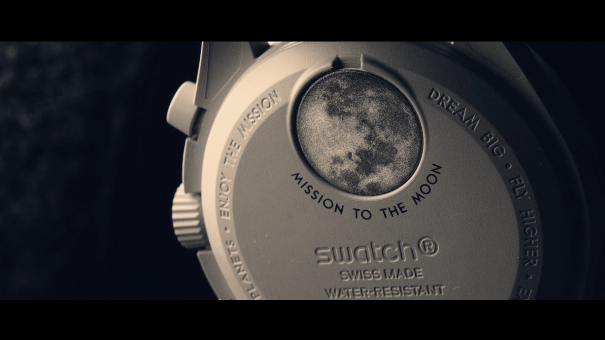

MISSION TO THE MOON03
La MoonSwatch Mission to the Moon est une montre née de l’emblématique collaboration entre Swatch et Omega, rendant hommage à l’exploration lunaire et aux voyages spatiaux.
Pour ce projet, j’ai réalisé une vidéo commerciale mêlant plans macro B-roll de la montre et animations stylisées 2D/3D d’un lancement de fusée vers la Lune.
J’ai filmé la montre sous l’eau, dans mon aquarium, en jouant sur l’éclairage et les reflets pour créer une atmosphère profonde et surnaturelle.
Les éléments célestes comme la Terre, la Lune, les étoiles et les flammes du moteur ont été conçus sur Photoshop et After Effects.
L’animation de la fusée et l’assemblage de la scène ont été réalisés dans Cinema 4D, avec un rendu final et un compositing dans After Effects, intégrant glow, ombres et voice-over pour enrichir la narration.
- 
- 
- 
antoine-riou.github.io | © 2020-2025 Tous droits réservés.